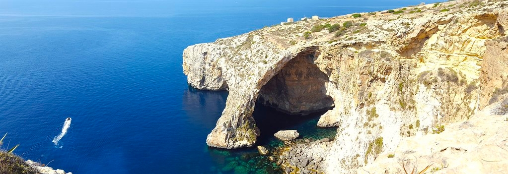

Merħba fil-websajt!

Main Categories:
Miscellaneous: |
A spiritual succesor to Grazio Falzon's aboutmalta.com This website contains original articles and web resources, pertaining to the Maltese Archipeligo. Contribute to the website by: Submitting code via the github repo Or via email at: malti-archipelago-info@protonmail.com You can contribute web links, original articles, suggestions, error fixes, and more! 
|
Developed and maintained by Julian, Zachary, and other wonderful contributors.